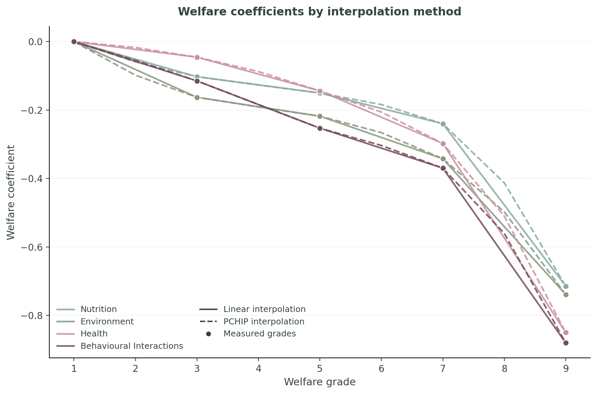
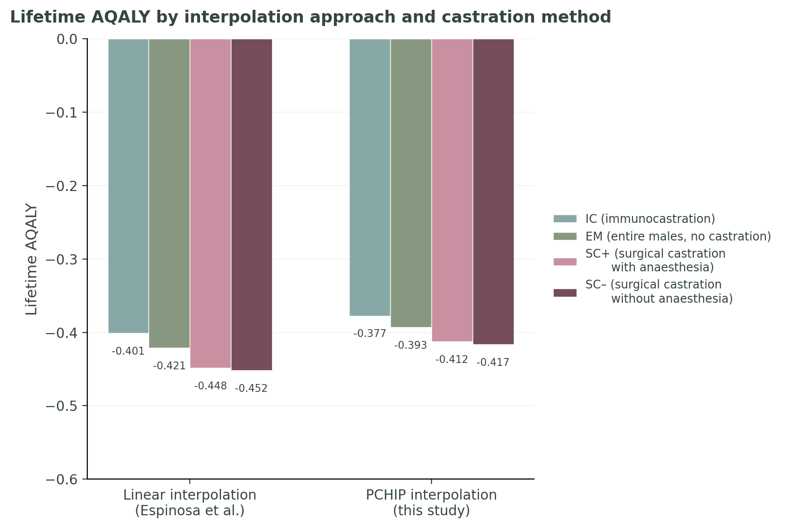
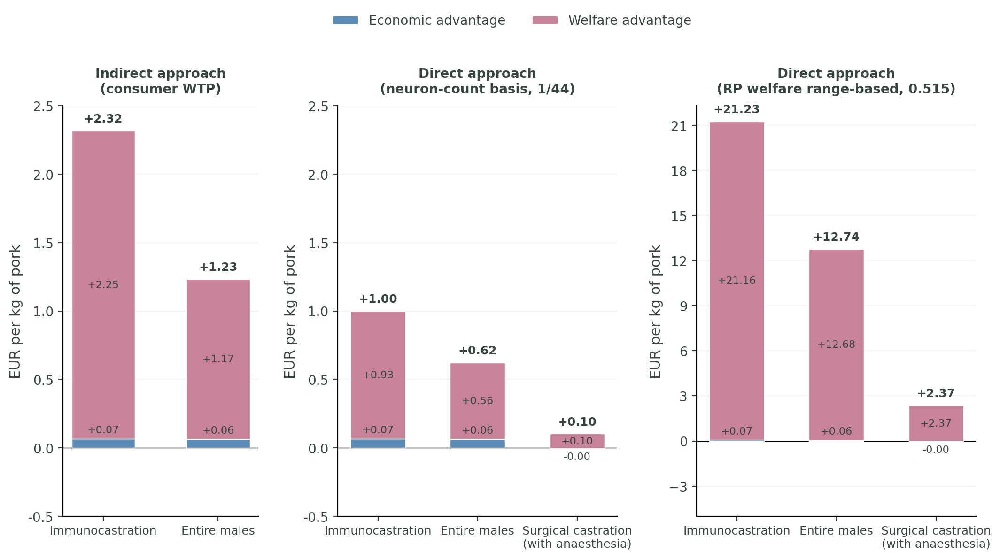

Preliminary methodology and results — Carpenter & Kanepajs, May 2026
We apply the AQALY-4PD framework (Espinosa, Browning & Treich, 2025) to compare four castration methods for male pigs in Belgian conventional confinement, using coefficients from the merged sample (Table A2, N = 1,062). The baseline is a castrated pig under current Belgian conditions (N = 5, E = 8, H = 7, B = 8), assessed over the 200‑day fattening period.
Four methods compared: IC immunocastration, EM entire males (no castration), SC+ surgical castration with anaesthesia, SC− surgical castration without anaesthesia.
We identify five distinct welfare states that a pig may pass through during the 200-day fattening period, depending on the castration method used. Each state is characterised by grades across four domains: Nutrition (N), Environment (E), Health (H), and Behavioural Interactions (B). Grade 1 is the best attainable welfare; grade 9 is the worst.
| Life stage | N | E | H | B | AQALY/yr | Applies to |
|---|---|---|---|---|---|---|
| Baseline Castrated pig, conventional confinement |
5 | 8 | 7 | 8 | −0.506 | SC+/SC− post-acute; IC post-V2 |
| SC− acute pain Surgical wound without pain relief |
5 | 8 | 8 ↑ | 9 ↑ | −1.038 | SC− (5 days) |
| SC+ acute pain Surgical wound with anaesthesia |
5 | 8 | 8 ↑ | 8 | −0.718 | SC+ (5 days) |
| Pre-pubertal intact Uncastrated, more exploratory |
5 | 8 | 7 | 7 ↓ | −0.315 | IC, EM (120 days) |
| Post-pubertal aggression Intact, fighting, skin lesions |
5 | 8 | 8 ↑ | 8 | −0.718 | IC (53 d), EM (80 d) |
Arrows indicate grade changes relative to baseline. ↑ = worsening (higher grade); ↓ = improving (lower grade). Only domains that differ from baseline are highlighted.
SC+ is Belgium's current legal requirement and serves as our reference method. Pigs undergo surgical castration with pain relief in the first days of life, experience a brief acute pain period (Health worsens to grade 8 due to the wound), then spend the remainder of the fattening period at baseline.
| Segment | Life stage | Duration (days) | AQALY/yr | Segment AQALY |
|---|---|---|---|---|
| Acute pain | SC+ acute | 5 | −0.718 | −0.00983 |
| Post-castration | Baseline | 195 | −0.506 | −0.27009 |
| Total | 200 | −0.27992 |
Immunocastrated pigs remain intact until two vaccinations suppress gonadal hormones. During the pre-pubertal phase (120 days), intact pigs benefit from greater exploratory behaviour and play (Behavioural Interactions improves from grade 8 to 7). After puberty, intact pigs experience increased aggression (Health worsens to grade 8) until the second vaccination takes effect, after which they revert to the castrate baseline.
| Segment | Life stage | Duration (days) | AQALY/yr | Segment AQALY |
|---|---|---|---|---|
| Pre-pubertal | Pre-pubertal intact | 120 | −0.315 | −0.10354 |
| Vaccination | Baseline | 2 | −0.506 | −0.00277 |
| Post-pubertal | Post-pubertal aggression | 53 | −0.718 | −0.10421 |
| Post-V2 transition | Baseline | 25 | −0.506 | −0.03462 |
| Total | 200 | −0.24517 |
IC yields a lifetime AQALY of −0.245 vs −0.280 for SC+: a welfare gain of +0.035 AQALY over the 200-day period, driven primarily by the 120-day pre-pubertal behavioural benefit.
Table A2 provides coefficients at five measured grades (1, 3, 5, 7, 9). Intermediate grades are obtained by interpolation. Because much of the pig's life is spent at grades 7–9, the interpolation method matters. We use PCHIP (Piecewise Cubic Hermite Interpolating Polynomial) instead of linear interpolation to preserve the concavity visible in the measured data, particularly the steep drop between grades 7 and 9 in Health and Behavioural Interactions.

Figure 1. AQALY welfare coefficients across all nine grades for each domain. Solid lines: linear interpolation (Espinosa et al. default). Dashed lines: PCHIP (this study). Both coincide at the five measured grades (1, 3, 5, 7, 9) and diverge at even grades. The largest gap is at grade 8, where the linear method overshoots relative to the data's curvature.

Figure 2. Lifetime AQALY scores (200-day fattening period) under linear and PCHIP interpolation. Rankings are preserved: IC > EM > SC+ > SC− under both methods. Linear interpolation produces scores that are 0.024–0.036 AQALY more negative, because it overshoots at grade 8 where the data curves. The relative differences between methods are broadly similar.
To monetise welfare differences, we multiply the AQALY gain by a moral weight parameter and a human Quality-Adjusted Life Year benchmark (EUR 147,000, OECD/EU). We test two moral weight values: a cortical-neuron ratio (1/44 = 0.023, conservative) and the Rethink Priorities welfare range-based estimate (0.515, conditional on hedonism). The figure below compares this direct welfare valuation with consumer willingness-to-pay evidence.
All three panels use surgical castration without anaesthesia (SC−) as the common reference. Panel A shows the indirect approach: consumer WTP premiums for immunocastration and entire males, from Lin-Schilstra and Fischer (2022). SC+ is excluded because the experimental design used it as the reference price, systematically biasing its apparent WTP. Panels B and C show the direct approach: combined economic and welfare advantage of each method (including SC+) relative to SC−. Rankings are preserved across all three panels: IC first, EM second.

Figure 3. All panels reference SC− (surgical castration without anaesthesia). Panel A: consumer WTP (Lin-Schilstra and Fischer 2022, Belgium, n = 825); SC+ excluded (reference price in experimental design). Panels B–C: combined economic and welfare advantage vs SC− in EUR per kg of pork, under two moral weight parameters. Values converted at 70 kg of retail pork per pig sold; EUR 147,000 per QALY (OECD/EU). Panel A WTP premiums are stated consumer surplus per kg of product; Panels B–C show social welfare per kg of all pork sold. Economic advantages (blue) from the Phase 1 cost comparison; welfare advantages (pink) AQALY-derived. Panels A and B share the same y-axis scale. The IC > EM ranking is preserved across all three panels.